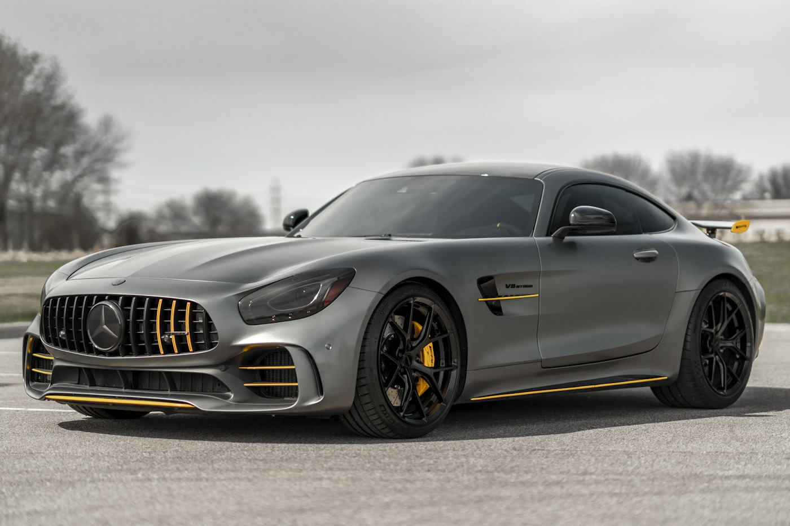
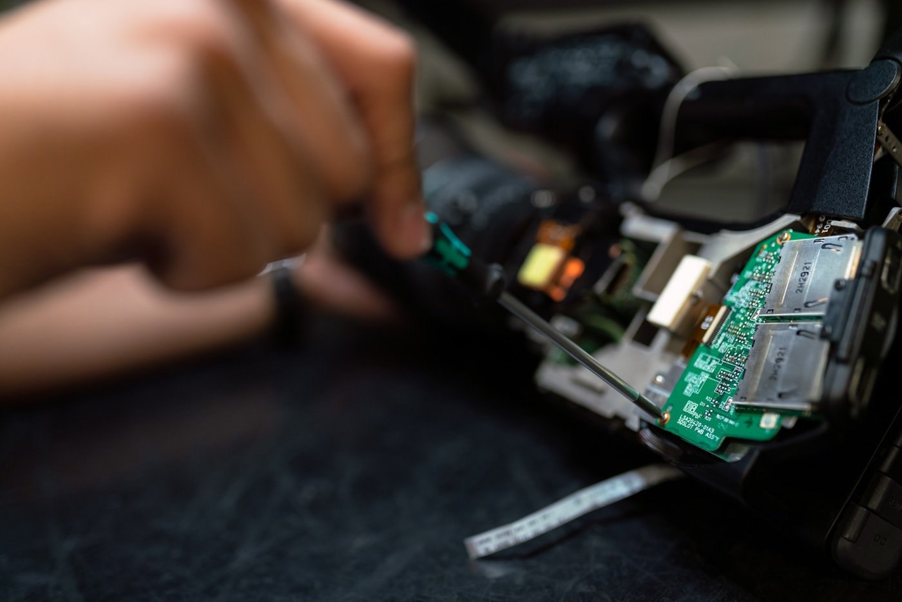
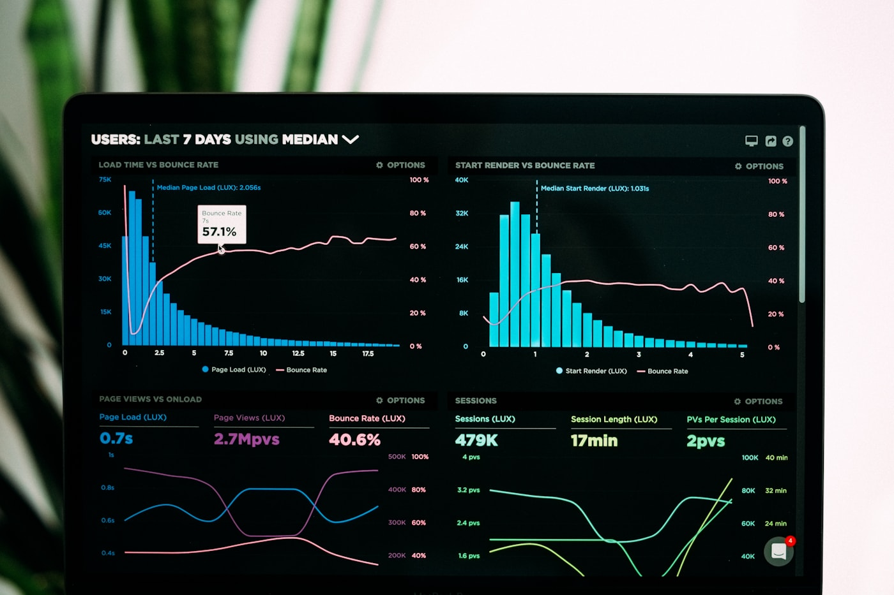
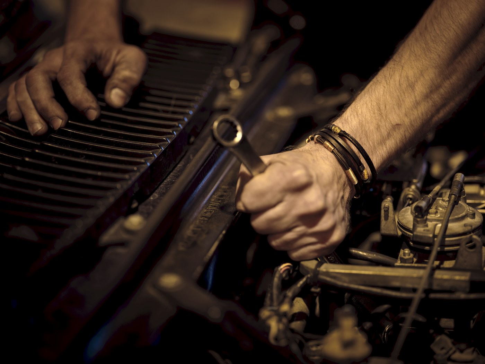
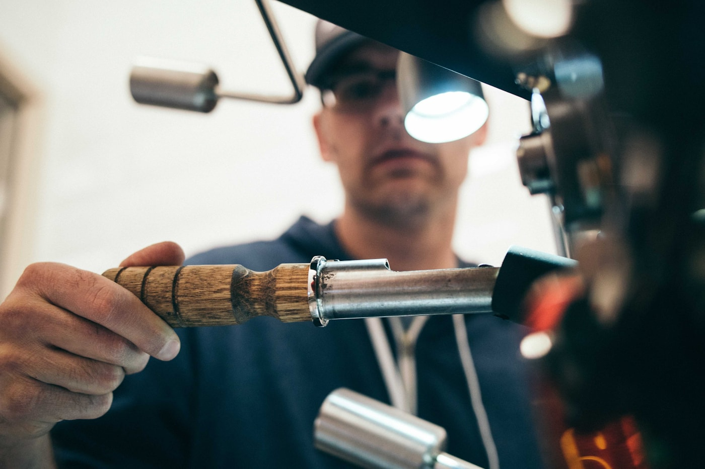
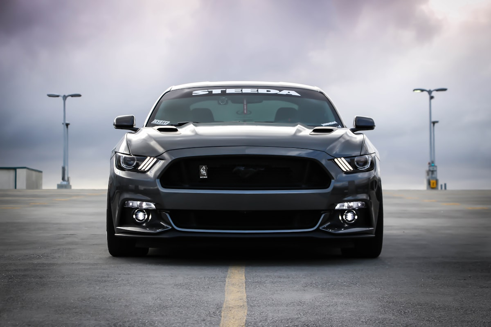

Achievement
Vision-based lane tracking & path planning for autonomous navigation
Lane detection, vehicle positioning vs. lane center, and motion planning in MATLAB/Simulink—foundational to how I still think about perception and control.
Autonomous vehicles focused since 2013
Engineering leader · autonomy, AV performance & verification
I am an autonomous vehicles engineer at heart. My interest started in 2013 during graduate research—two IEEE publications on AV perception and planning—then a few years in crash and safety. I came back to autonomy with Aptiv (sensors & verification) and now ship at Motional.
# Road feedback, honest triage, and test discipline—from MATLAB models to public-road programs.
[scroll to explore]


A simple arc: research → industry foundations → back to autonomous driving → scale.
Lane tracking, motion planning, SICK LiDAR obstacle avoidance, steering control—published two IEEE-related papers on autonomous vehicles (see Research). That is where the AV thread really started.
Application engineering and crash analysis—deep vehicle-side understanding before returning full-time to the autonomy stack.
Sensor test & verification for cameras, radar, lidar, ultrasonics, IMU—working the AD system envelope, requirements, and on-road proof. This was the deliberate return to AV.
Systems test, triage, AV performance—public roads, simulation, HIL, and global leadership on how we learn from the fleet.

Illustrative photo (replace with images/portrait.jpg if you want a headshot). The work section below uses project-themed photography for each chapter of the story.
Cars and engineering have been a through-line—design, dynamics, and systems thinking. I still bring that obsession to work: rigor, clarity, and respect for the machine—whether it is a vehicle platform or a software release.
Languages: English, Hindi, Telugu.
From my graduate work—two peer-reviewed IEEE-related publications on autonomous vehicles. Replace the IEEE Xplore links below with your direct document URLs from each paper’s page when you paste them in.
Achievement
Lane detection, vehicle positioning vs. lane center, and motion planning in MATLAB/Simulink—foundational to how I still think about perception and control.
Achievement
SICK LiDAR–based avoidance, steering architecture, and sensor tradeoffs—pairing perception with safe motion under real hardware constraints.
Tip: open your paper in IEEE Xplore, copy the stable document URL from the address bar, and replace the two href values on the buttons above in index.html.
Roughly chronological—how research turned into shipping programs. Each image is a real photograph matched to the theme (swap files in images/ for your own project shots).
Graduate research: lab builds, measurement, and iteration—where the IEEE AV work came from.
Motion planning, lane tracking (MATLAB/Simulink), SICK LiDAR obstacle avoidance, steering control, and sensor architecture tradeoffs—Unigraphics NX / AutoCAD for structure and experiment design.

Safety & crash: structural loads, occupant protection, and why hardware limits matter for autonomy.
Deep vehicle-side and occupant-safety context—valuable grounding before I moved back into full autonomous-systems work.

ADAS / AV stack: in-cabin systems, displays, and the sensor–ECU world I verified at Aptiv.
After safety-focused roles, this is where I returned to the autonomous driving stack: test plans for AV sensors—cameras, radar, lidar, ultrasonics, IMU. Partnered with R&D on the AD system, operational envelope, tools, and processes; documented automated-driving requirements; CAN, ECUs, lab and on-road testing; NHTSA Levels 2–5 context.

Fleet & road programs: performance, triage, and closing the loop from street to release.
Built and led triage and integration-facing teams—driving the development, test, and evaluation loop for Autonomy and Platform Infrastructure. Owned RCA, FTA, and FMEA across public roads, closed course, simulation, and HIL; roadmap, goals, and planning with stakeholders; global lead across multiple regions; horizontal work in feature development, design reviews, and operational-domain threads. Earlier: led software test org (eight engineers) for end-to-end capabilities across parallel programs—simulation, automation, and manual test where each adds the most value.
Academic & side builds: perception, embedded logic, and prototypes outside the production stack.
Autonomous ground vehicle: lane detection (Hough-based methods) and obstacle avoidance with camera + LiDAR; vehicle position vs. lane center. Firefighting robot: embedded navigation on a modeled floor plan with flame sensing—prototype for emergency-response robotics.
Tools & repos: dashboards, automation, and experiments I ship on GitHub.
Repos, dashboards, and experiments on GitHub—side projects and developer productivity ideas.
View GitHub →End-to-end test strategy, SIL/HIL, public and closed course—requirements that match how the stack actually behaves.
Component SMEs, integration loops, and turning incidents into durable product insight.
Camera, radar, lidar, ultrasonics, IMU; MATLAB/Simulink; SolidWorks, CATIA; FEA; ML and computer vision where it counts.
Global teams, roadmaps, stakeholder alignment, release practices—without losing technical depth.
Open to conversations about autonomy, verification, and leadership. Best first touch: